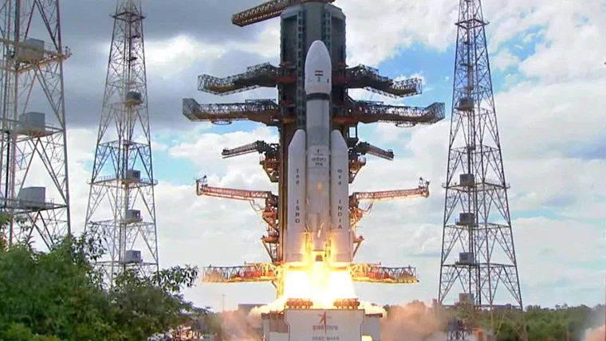

Prothom Alo - Saturday, 26 August 2023 - World
চাঁদের পর এবার সূর্য অভিযানে যাচ্ছে ভারত

চাঁদে সফলভাবে অবতরণের পর এবার সূর্যের দিকে নজর দিয়েছে ভারতের মহাকাশ গবেষণা সংস্থা ইসরো।
সপ্তাহখানেকের মধ্যেই সূর্য নিয়ে গবেষণা চালাতে একটি মহাকাশযান পাঠানোর প্রস্তুতি নিচ্ছে সংস্থাটি।
ভারতে সৌর অভিযানে ব্যবহার করা হবে নামের মহাকাশযান। এটি দিয়ে সূর্যের বহির্ভাগের পরিবেশের বিভিন্ন স্তর পর্যবেক্ষণ করা হবে।
এ ছাড়া সৌরঝড় পর্যবেক্ষণ করতে সূর্যের ১৫ লাখ কিলোমিটারের মধ্যে (এল-১ পয়েন্ট) যাবে মহাকাশযানটি।
Visit us at:
prothomalo.com
Dhaka, Bangladesh.
- a2+b2= (a+b)2+2ab
- a2-b2= (a+b)(a-b)
- CO2
- H2O
- C6H12O6